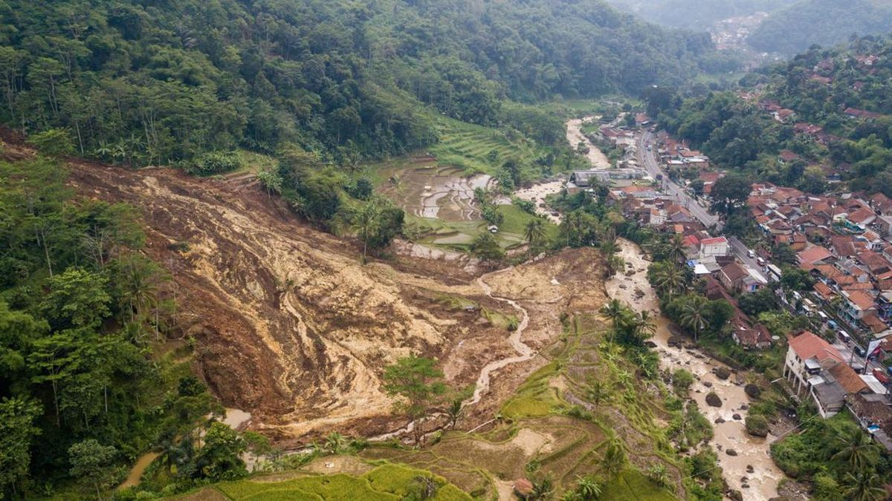

Tindakan Saat Terjadi Longsor

Jika Anda berada di dalam bangunan:
- Segera berlindung di tempat yang aman, jauh dari jendela dan dinding luar.
- Hindari area yang berpotensi rawan longsor, seperti dekat tebing atau lereng.
- Matikan peralatan listrik untuk mencegah kebakaran jika terjadi kerusakan.
- Segera keluar dari bangunan jika memungkinkan dan hindari reruntuhan.
Jika Anda berada di luar bangunan:
- Hindari daerah rawan longsor, seperti tebing dan jalur pegunungan.
- Perhatikan tanda-tanda awal longsor, seperti suara gemuruh atau getaran tanah.
- Segera cari tempat yang lebih aman, jauh dari area yang berpotensi longsor.
- Jika Anda mengendarai kendaraan, segera keluar dan menjauh dari kendaraan jika ada tanda-tanda longsor.
Jika terjadi longsor saat berkendara:
- Hindari berkendara di jalur yang terpengaruh longsor.
- Segera berhenti di tempat yang aman dan menjauh dari tebing atau lereng.
- Waspadai jalanan yang mungkin tertutup material longsor.
Kembali ke Beranda